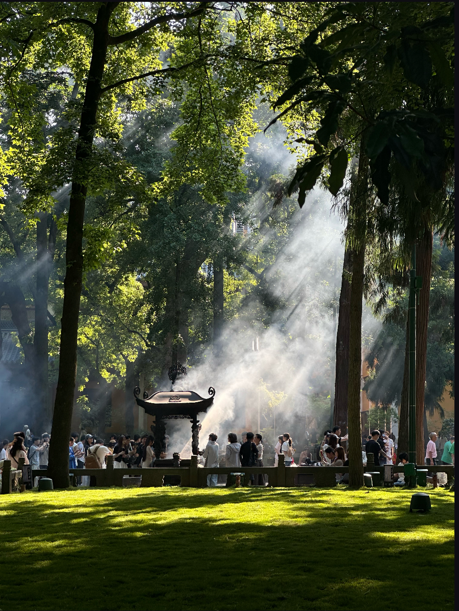

灵隐寺，又名云林禅寺，是杭州最早的名刹，距今已有约一千七百年的历史。它不仅是香火鼎盛的祈福圣地，更是一部承载着千年文脉的立体禅史，千年古刹，仙灵所隐。
灵隐寺始建于东晋咸和元年（公元326年），由印度高僧慧理创建。他看到此地山峰奇秀，感叹道：“此乃中天竺国灵鹫山一小岭，不知何代飞来？佛在世日，多为仙灵所隐。”于是便在此建寺，取名“灵隐”，意为“仙灵所隐”之地。
千百年来，灵隐寺屡毁屡建，历经14次兴废，但法脉从未断绝。从唐代诗人白居易的“东南山水，余杭郡为最”到宋代大文豪苏东坡的“最爱灵隐飞来孤”，无数文人墨客在此留下足迹与诗篇，为其增添了深厚的文化底蕴。